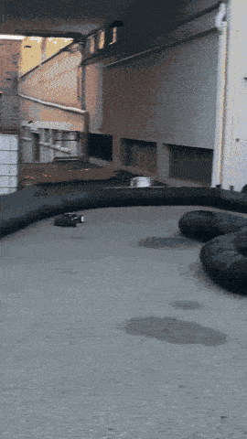
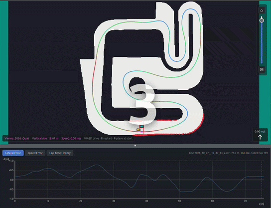
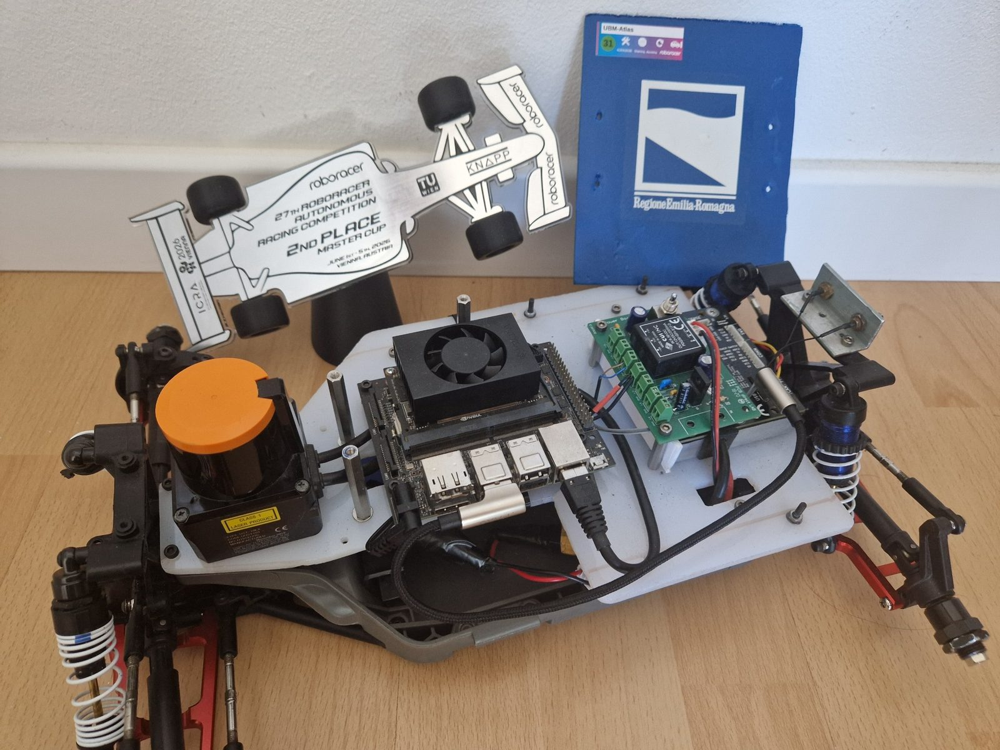

AuRoRus: an autonomous racing stack
in Rust for RoboRacer / F1TENTH cars.
AuRoRus (Autonomous Roboracer Rust) is an open-source autonomous driving stack for RoboRacer (formerly F1TENTH) 1:10 scale cars, written entirely in Rust. It covers the whole pipeline in one crate: a vehicle and LIDAR simulator with a random track generator, SLAM mapping and localization, race-line planning, opponent detection, a set of autonomous driving algorithms, and the drivers for the real car (VESC, Hokuyo LIDAR, joystick). Everything is driven from a browser GUI, and the same code runs in simulation on a laptop and on the car.
In action

AuRoRus driving the real car

Frenet overtaking against the MPC in simulation, on the ICRA 2026 Vienna qualifying track
What is inside
- Simulator: vehicle dynamics models, LIDAR simulation, a random track generator and simulated opponents to race against.
- SLAM: mapping a track and localizing on a known map, plus a mapping lab to rebuild maps offline with other parameters and compare them.
- Race-line planning for any map, including the ICRA 2025 Atlanta and ICRA 2026 Vienna tracks shipped with the repository.
- Opponent detection: finding and tracking the other car by comparing the LIDAR scan with the map.
- Driving algorithms, selectable and tunable live: gap follower, pure pursuit, disparity extender, potential field, path follower, Frenet overtaking and MPC.
- Real car drivers for the VESC, the Hokuyo LIDAR and a joystick, with a guided car calibration and hardware probes.
- Web GUI to control everything from a browser, plus debug-session replay and a benchmark viewer to compare lap times and telemetry.
Racing with AuRoRus
The algorithms in AuRoRus come from the UniBo Motorsport Driverless 1:10 team of the University of Bologna, which I have led since 2024, ported from our ROS2 stack to Rust.
- 1st place, RoboRacer World Championship, ICRA 2025, Atlanta, with the Frenet overtaking
- 2nd and 3rd place, Master Cup, RoboRacer World Championship, ICRA 2026, Vienna, with the Frenet overtaking and the MPC

Get started
Install Rust with rustup, then build and run the web GUI from the repository root
and open http://localhost:1999. On a machine that isn't set up as a car it runs the simulation.
git clone https://github.com/Noce99/AuRoRus
cd AuRoRus
cargo build --release
./target/release/web_guiThe README documents every executable, and the tutorials walk through writing an autonomous algorithm from an empty file. AuRoRus is dual licensed under Apache 2.0 and MIT.